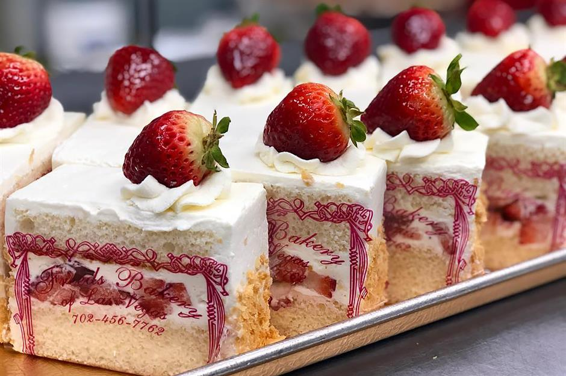
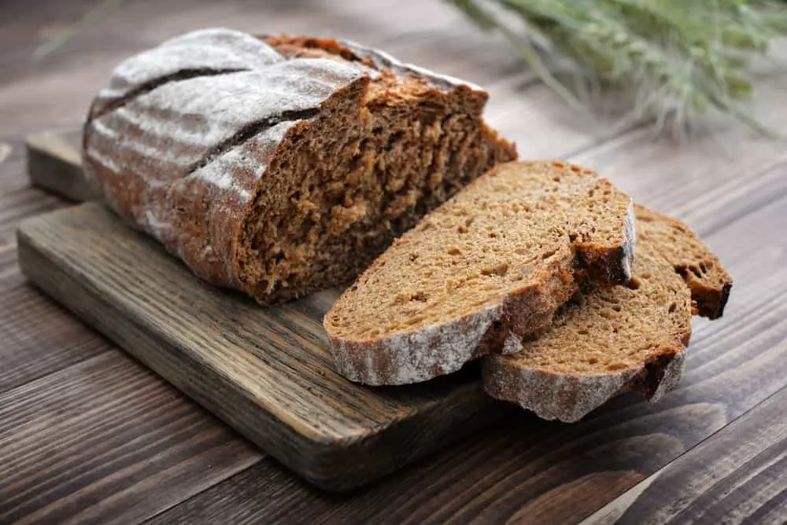

About Elvis Bakery
Thanks For Read , Thanks For Looking
Cookies :
Flour used for cookie production is around 8-10% protein and milled from soft red winter wheats with low water absorption capacity. This has a strong effect on the cookie spread and structure. Flour particle size and damaged starch also have effects on cookies. Flours with smaller particle size produce cookies with less spread, due to the increased presence of damaged starch. Damaged starch absorbs more water than intact starch, thus leaving less water available for the cookie to flow. High levels of damaged starch are detrimental to cookie quality.Wheat flour of particle size greater than 150 μm is better for cookie production.1 If there is a desire to limit cookie spread, as in the case of Marie biscuits or Oreo® cookies, hard wheat flours of medium-high protein may be used. In addition, if a tough structure is needed in rich cookie formulations, bakers may use chlorinated flour.Cookies are thought to consist of a continuous glassy sugar matrix with ungelatinized starch granules embedded within, together with an undeveloped gluten network with fat. Sweetener composition plays an important role in the softening properties of cookies.3 The sweetener level in cookie dough is 17-30% on a solid basis.3 Sweeteners regularly used in cookie production include sucrose, high fructose corn syrup, invert sugar or corn syrup.
Cookies
Cream pie
Croissants
Bread
Sweets